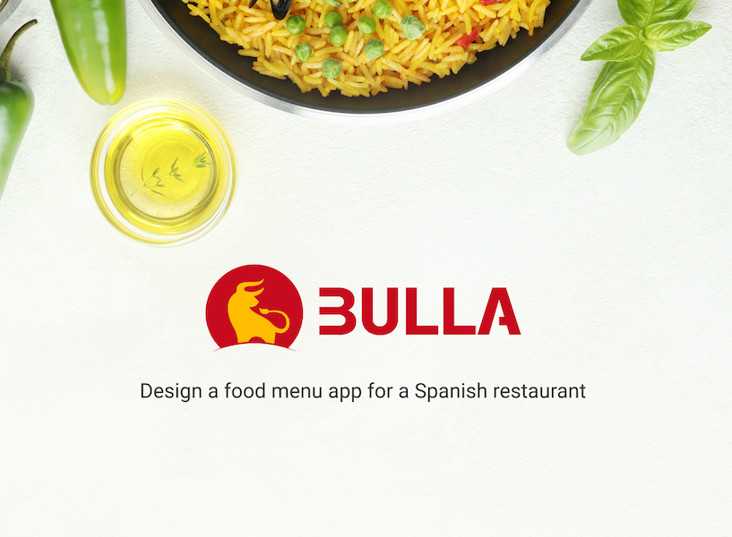

Bulla redefines the restaurant app experience — pairing a rich catalog of authentic Spanish cuisine with an intuitive, visually immersive ordering flow that turns a simple meal into something worth remembering.
Designed as a concept app, it explores how food culture, storytelling, and UX can come together in a single tap. The challenge was to create an experience that felt premium and warm simultaneously — a product that honors the food while making ordering feel effortless.
The design system draws from Spanish visual culture: warm terracotta tones, generous white space, and typography that balances editorial weight with approachable readability. Every screen was pressure-tested for one-handed use, accessibility, and emotional resonance.